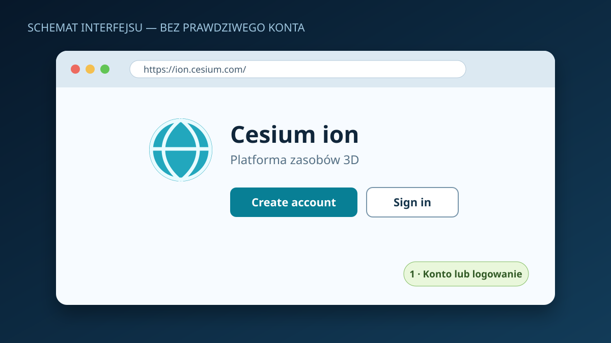
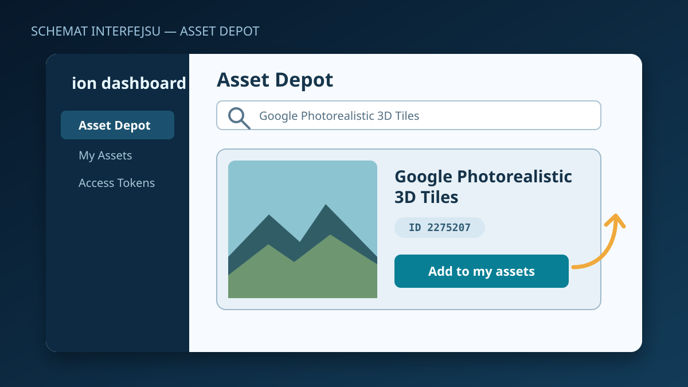
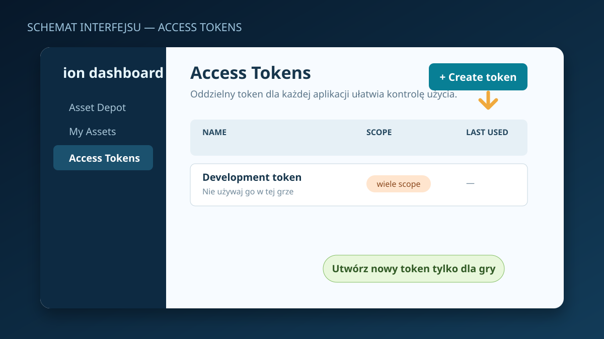
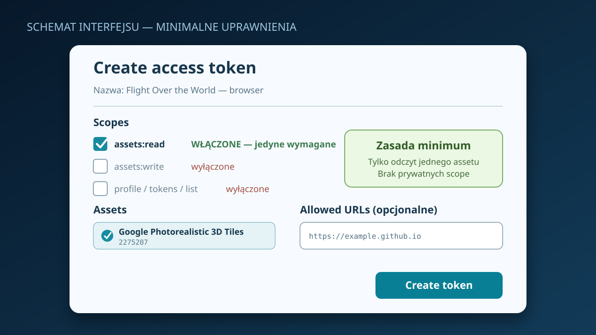
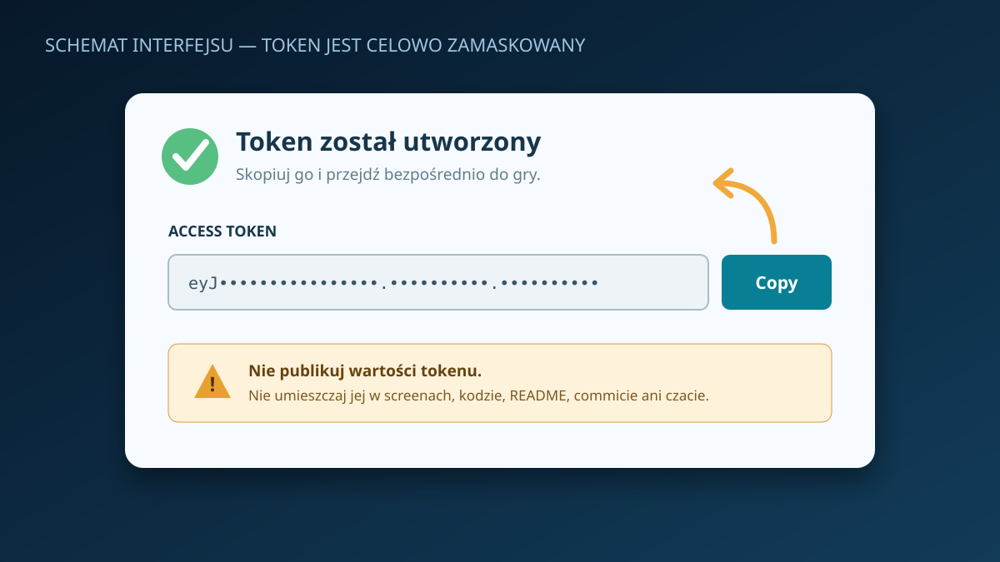
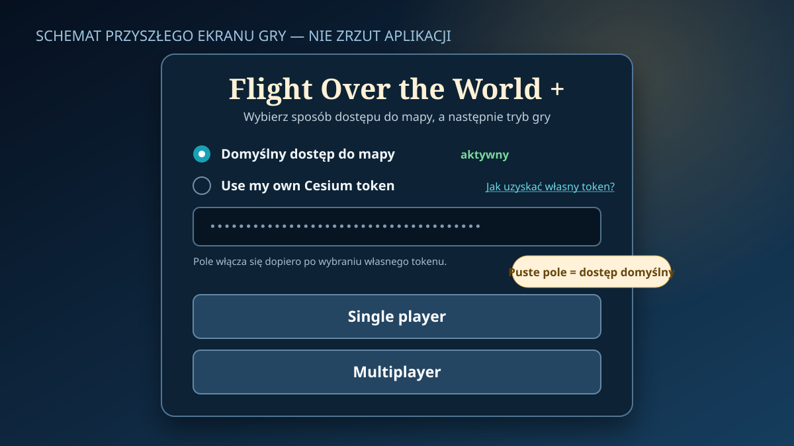

Jak uzyskać własny token Cesium ion?
Domyślny dostęp do mapy pozostaje aktywny. Własny token jest opcjonalny i korzysta z limitu Twojego konta Cesium ion.
Ważne: obrazy poniżej są czytelnymi schematami, nie zrzutami prawdziwego konta. Panel Cesium może wyglądać nieco inaczej.
1 Załóż konto lub zaloguj się
- Otwórz ion.cesium.com.
- Wybierz Create account / Sign up albo Sign in.
- Po weryfikacji przejdź do panelu ion.

2 Dodaj Photorealistic 3D Tiles
- Otwórz Asset Depot.
- Wyszukaj Google Photorealistic 3D Tiles.
- Sprawdź identyfikator
2275207i wybierz Add to my assets.
Jeśli asset jest już w My Assets, nie dodawaj go ponownie.

3 Utwórz osobny token
- Przejdź do Access Tokens.
- Wybierz Create token.
- Nazwij go np.
Flight Over the World — browser.

4 Nadaj minimalne uprawnienia
- Włącz tylko
assets:read. - Nie włączaj uprawnień zapisu, profilu ani zarządzania tokenami.
geocodenie jest tej grze potrzebne.- Jeśli jest dostępne Selected assets, wybierz wyłącznie asset
2275207.
Opcjonalnie ustaw Allowed URLs na origin https://headlost.github.io (bez ścieżki projektu). Przeglądarka przekazuje ten origin przy żądaniu do Cesium; wpis ze ścieżką mógłby dać 403. Ograniczenie domeny obejmuje też jej inne ścieżki, dlatego wybierz równocześnie tylko asset 2275207 i zakres assets:read. Dla lokalnego Vite można dodać http://127.0.0.1:5173.

5 Utwórz i skopiuj token
- Zatwierdź formularz.
- Użyj przycisku Copy.
- Nie publikuj wartości w kodzie, repozytorium, czacie ani na screenach.

6 Wpisz token na ekranie gry
- Na ekranie startowym wybierz Use my own Cesium token.
- Wklej token w zamaskowane pole.
- Uruchom Single player albo Multiplayer.
Bez zaznaczenia tej opcji gra nadal korzysta z domyślnego dostępu.

Twój token pozostaje w Twojej przeglądarce: gra nie udostępnia go innym graczom ani wspólnej puli operatora. Zapisuje go wyłącznie w
sessionStorage bieżącej karty i wysyła bezpośrednio do Cesium ion w żądaniach terenu; nigdy nie zapisuje go w localStorage. Po zakończeniu sesji karty przeglądarka usuwa ten zapis. Token aplikacji przeglądarkowej nie jest jednak tajnym hasłem, dlatego używaj tylko assets:read, ogranicz asset i URL, obserwuj limity, a ujawniony token natychmiast unieważnij.Gdy mapa się nie otwiera
- 401: token jest błędny lub cofnięty.
- 403: sprawdź asset 2275207,
assets:readi Allowed URLs. - 402/429: sprawdź limit konta; dodatkowy token na tym samym koncie nie zwiększa limitu.